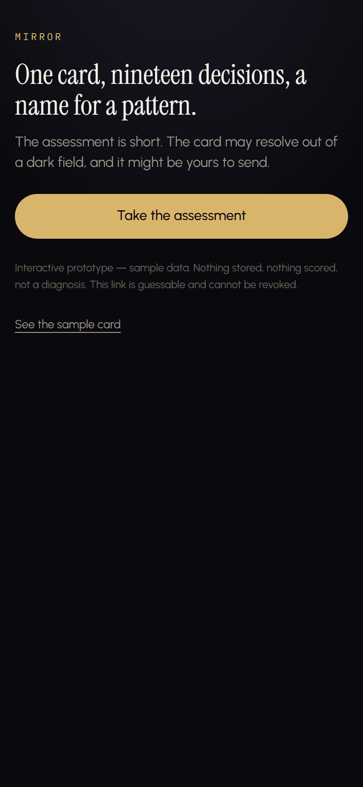

Interactive prototype. Sample data throughout; not a launched product.
Mirror is an interactive prototype. It was built from an approved product specification to a working interactive prototype: a short assessment, a card that resolves out of the reader's own answers, and a share view that carries the card to one other person. Everything runs on sample data. The build was verified by an automated harness rather than by testers, and the specification's copy rules were checked against the strings the interface renders.
Role: Solo build from an approved product specification
Type: Interactive prototype, unlaunched
Stack: Next.js App Router, TypeScript, Tailwind; deploy target Vercel
What was built
- A working interactive prototype built from an approved product specification.
- A short assessment that resolves into a card, on sample data.
- A share view that presents the card to the person it was sent to.
- Next.js App Router and TypeScript throughout, with the interface layer in Tailwind.
- A deploy target on Vercel for an unlaunched prototype.
How it was verified
The build was verified by an automated harness rather than by testers: the harness drove the prototype's screens and checked the strings the interface renders against the copy rules in the specification. No claim about the basis or the accuracy of the model the prototype draws on is made here, and none is made on the prototype itself.

No public link — Mirror is unlaunched, so there is no public URL for it.